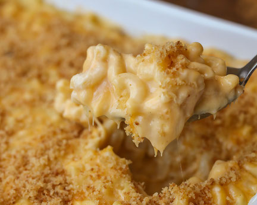

Homemade Mac & Cheese

This recipe can be ready in 50 minutes!
Ingredients
- 8 ounces uncooked elbow macaroni
- 2 cups shredded sharp cheddar cheese
- 1/2 cup grated Parmesan cheese
- 3 cups milk
- 1/4 cup butter
Directions
- Cook macaroni according to the package directions. Drain.
- In a saucepan, melt butter or margarine over medium heat. Stir in enough flour to make a roux. Add milk to roux slowly, stirring constantly. Stir in cheeses, and cook over low heat until cheese is melted and the sauce is a little thick. Put macaroni in large casserole dish, and pour sauce over macaroni. Stir well.
- Melt butter or margarine in a skillet over medium heat. Add breadcrumbs and brown. Spread over the macaroni and cheese to cover. Sprinkle with a little paprika.
- Bake at 350 degrees F (175 degrees C) for 30 minutes. Serve.
Try these brownies for dessert!